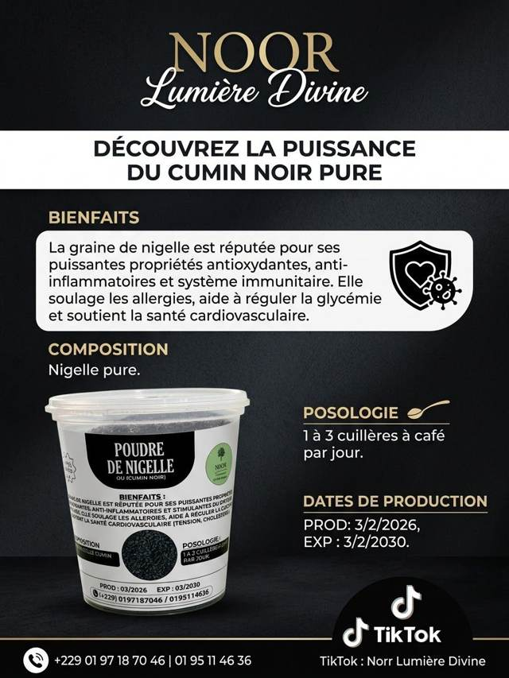
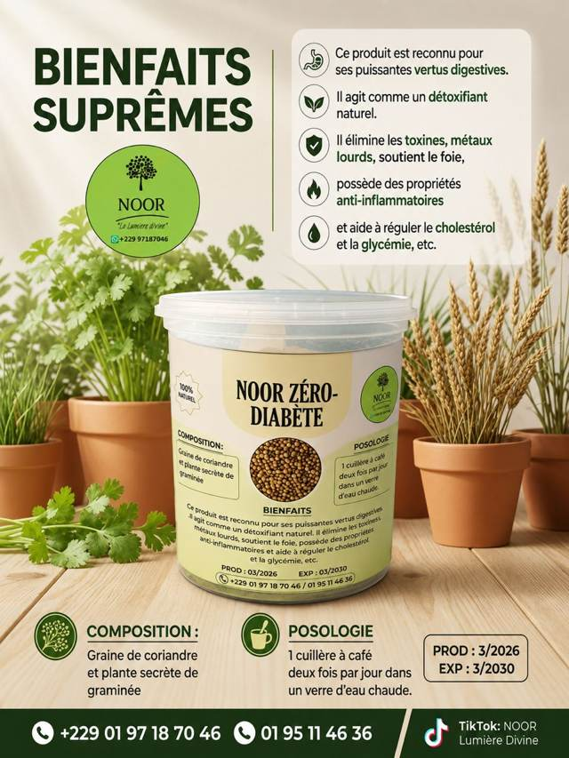
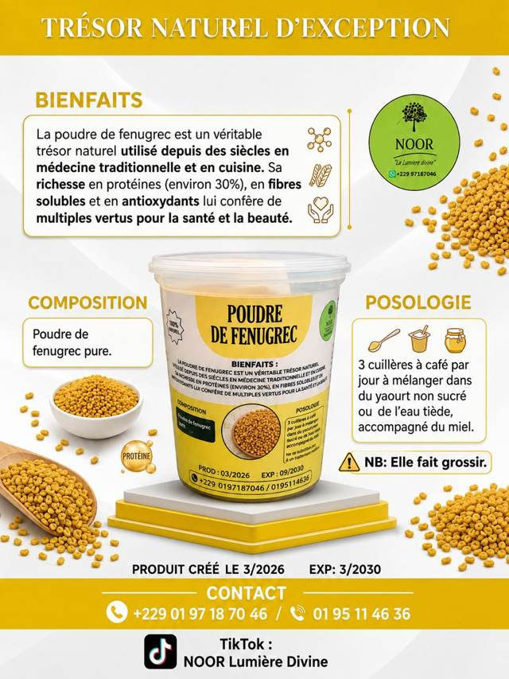
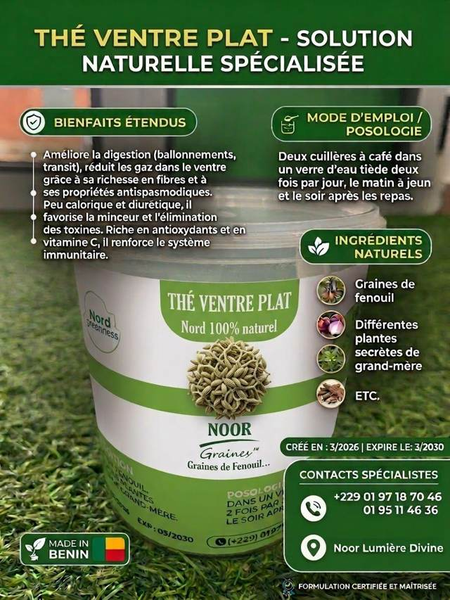
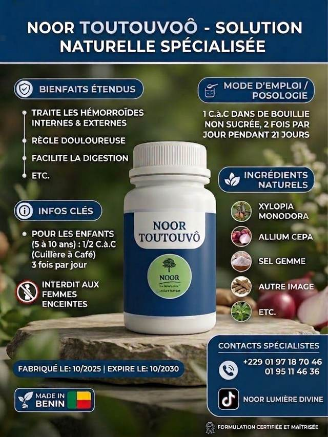
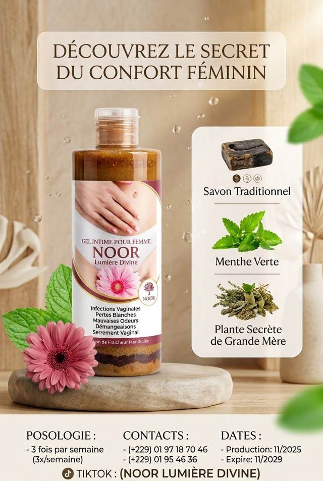
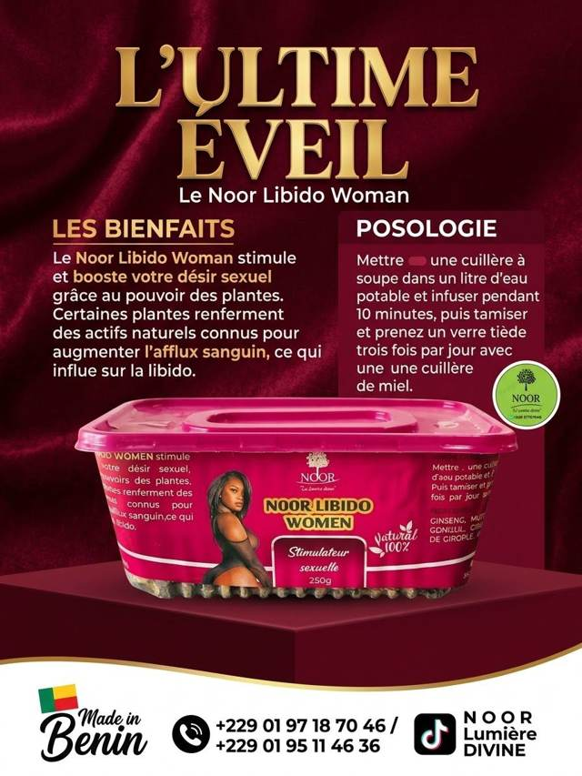
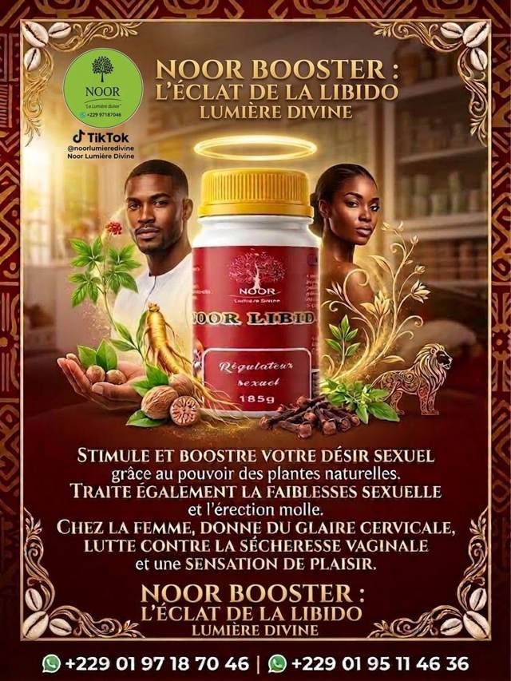

Toute la gamme NOOR Lumière Divine : poudres, soins et miel, élaborés avec savoir-faire à partir de plantes naturelles soigneusement sélectionnées.
Des poudres et tisanes pour accompagner la digestion, le transit et le confort du ventre au quotidien.

Poudre de plantes pour accompagner le confort de l'estomac et réguler le transit.
Utilisation : dans l'eau tiède ou le lait, 2 fois par jour à jeun.
Commander ce produit →
Réputée pour ses propriétés antioxydantes et anti-inflammatoires, elle soutient les défenses de l'organisme.
Utilisation : 1 à 3 cuillères à café par jour.
Commander ce produit →
Mélange à base de graine de coriandre, aux vertus digestives et détoxifiantes.
Utilisation : 1 cuillère à café, 2 fois par jour, dans un verre d'eau chaude.
Commander ce produit →
Graine riche en protéines, en fibres solubles et en antioxydants, utilisée depuis des siècles.
Utilisation : 3 cuillères à café par jour dans du yaourt, de l'eau tiède ou du miel.
À noter : peut favoriser la prise de poids.
Commander ce produit →
Infusion de graines de fenouil et de plantes, pour la digestion et le confort intestinal.
Utilisation : 2 cuillères à café dans l'eau tiède, matin et soir.
Commander ce produit →
Mélange traditionnel pour accompagner la digestion et le confort après l'accouchement.
Utilisation : 1 cuillère à café dans une bouillie, 2 fois par jour pendant 21 jours.
Déconseillé aux femmes enceintes.
Commander ce produit →Des tisanes et soins intimes à base de plantes, pour accompagner le cycle et l'hygiène au quotidien.
Élixir naturel pour accompagner le confort féminin et l'équilibre de la sphère intime.
Utilisation : en infusion, voir le dosage sur l'emballage.
Commander ce produit →
Gel au savon traditionnel et à la menthe verte, pour une hygiène intime douce et fraîche.
Utilisation : 3 fois par semaine.
Commander ce produit →
Mélange de plantes pensé pour accompagner le désir féminin et le confort intime.
Utilisation : 1 cuillère infusée dans 1L d'eau, un verre tiède 3 fois par jour avec du miel.
Commander ce produit →Un régulateur naturel à base de plantes, pour accompagner l'énergie et le désir du couple.

Régulateur à base de ginseng et de plantes naturelles, pour accompagner le désir et l'énergie.
Utilisation : posologie conseillée par nos spécialistes.
Demander conseil →Du miel pur récolté au Bénin, pour la table et les boissons du quotidien.
Miel 100% naturel, récolté au Bénin, sans additif.
Utilisation : tel quel, sur du pain, ou dans une boisson chaude.
Commander ce produit →Un soin pour la peau, formulé aux plantes, pour un usage doux au quotidien.
Savon aux plantes pour la peau : dartres, boutons, taches et démangeaisons.
Utilisation : usage quotidien, visage et corps.
Commander ce produit →